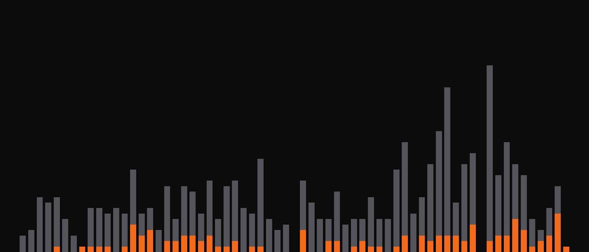
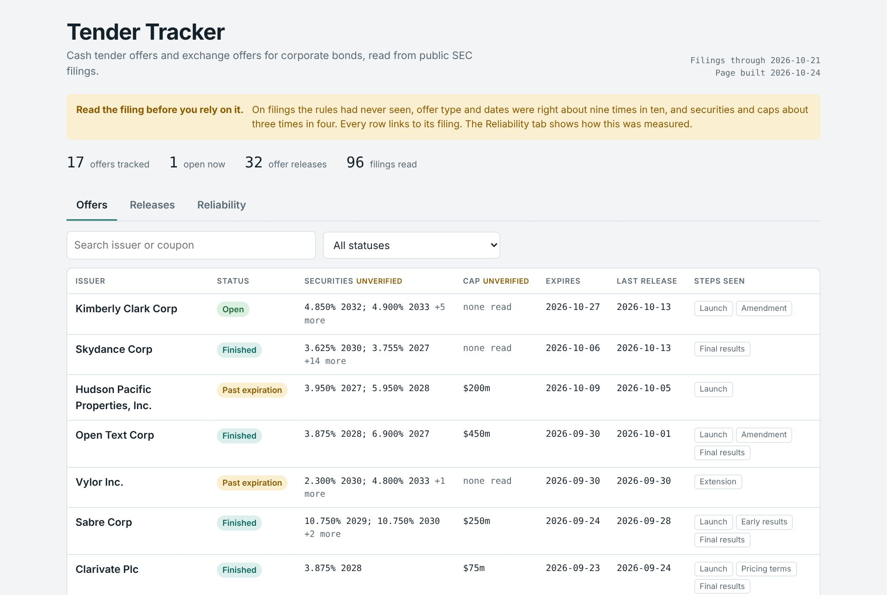

Tender Tracker.

A daily tracker of cash tender and exchange offers for corporate bonds.
In short
- The question
- What does a bond tender look like in a record year, and can a free script keep the list?
- Data and method
- SEC filings and three newswires, read by rules. AI reviewers graded them on filings the rules had not seen.
- What I found
- Two kinds. Through November 3, two thirds expired in four to seven business days and the rest ran about 20. About one in five changed after launch.
- What it means
- The fast tender is a refinancing. The slow one is a negotiation. Type and dates are right about nine times in ten, securities and caps three in four.
One row per offer, with a link to the filing
One row per offer, with its terms, its status and a link to the filing. It rebuilds every day from public filings and newswires.

Two kinds of tender, and which one a record year produces
Launches read from SEC filings, August 5 to November 3, 2026.
To expiration for 21 of the 31 dated launches. None had an early deadline.
The slower 9. Seven had an early deadline.
Median cap across the 18 offers with a dollar cap.
Offers extended or amended after launch.
US investment grade issuance through October 26, 2026. Bloomberg's count.
The 14 hand rows are not in these counts. I would want a person to check the caps before anyone traded on them.
I reran it on November 25 for launches since August 27. Fifteen from SEC filings had dates. Eight ran 4 to 10 weekdays with no early deadline, and seven ran 21 or 22 with one. The two kinds hold. The fast kind went from two thirds to about half.
How often it is right
AI reviewers graded it against the filings on releases the rules had never seen. Offer type and dates were right about nine times in ten. Securities and caps were right about three times in four. Nobody has checked these rows by hand.
The most common mistake is counting new notes being issued, or notes being redeemed, as the notes targeted. On the period the rules were built on, it found 32 of 33 offer releases. That is a best case. On October 26 I fixed the redeemed notes case and a few grouping errors. Those fixes have not been tested on new filings yet, so I do not claim a new number for them.
The weakness was recall. Through October 26 the search only read Form 8-K exhibits with six phrasings, and it found 17 offers in 90 days. Many issuers never file an 8-K for a tender and issue only a press release. On October 27 I widened the SEC search to 54 phrasings and Form 6-K, added PR Newswire and Bing News as sources, and the same window went to 44 offers. Fourteen more came from issuer sites and wires the script cannot reach, typed in by hand with the source linked and tagged HAND on the page. The accuracy numbers above cover the rules only. They leave out the rows I typed in.
How it is built
- A fetch step searches EDGAR full text search for tender and exchange offer press releases, then PR Newswire and Bing News for releases that never reached EDGAR, and caches the text.
- An offline rules step extracts offer type, securities, cap and dates, then groups releases into offers.
- A GitHub Actions job runs both every morning and publishes the page. It costs nothing to run.